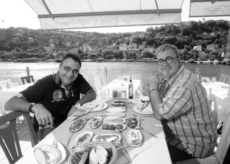

“Yemeğin üstüne 89 tane midye dolması yedim”
Tombul bir çocuk olabilmek için nasıl besleniyordunuz?
Geleneklere bağlı besleniyordum, şöyle ki; daha çok anneannemle birlikteydim, o da Selanik kökenli bir Balıkesirliydi. Anneannem “Sofrada bir şey kalmayacak, arkanızdan ağlar” anlayışına sahip biriydi. Ben bu işi çok ciddiye alan bir çocuktum. O senelerde yemeklerde Vita gibi tuhaf yağlar kullanılırdı, tabii biraz da yokluk zamanıydı. Ermeni’nin, Rum’un, Bulgar’ın bol olduğu bir semtte büyüdüm, dolayısıyla tüm bu mutfakların havasını kokladım. Geleneklere bağlı olarak tombul bir çocuk oldum ben.
Evinizin mutfağından neler hatırlıyorsunuz?
Haftanın bazı akşamları komşulara gidip yemek yenirdi, bazı akşamları da onlar bize gelirdi. Anneannem çok güzel yemek yapardı. Köfte yapmayı anneannemden öğrendim ve onun sayesinde sevdim, ben çok köfteci bir çocuktum. Kuru fasulye, börek gibi şeyleri de çok güzel yapardı; bazen akşam yemeğini börek ve ayranla geçiştirirdik. Bazı sebzeleri de çok güzel yapardı, ama genelde köfte ağırlıklı bir mutfaktı.
Mutfağın hâkimi kimdi, anneniz mutfağa girer miydi?
Mutfağın hâkimi anneannemdi. Anneannem ve annem arasında ciddi farklar vardı. Anneannem soğandan, annem de sarmısaktan hazzetmezdi, ben ikisini de çok severdim. Evler yan yanaydı, anneannemde sarmısaklı köfte yedikten sonra, anneme gidip soğanlı köfte yerdim. Annemin mutfağı daha hafifti, annem komşuların mutfağından daha çok etkilenmişti. Annem Rum mutfağını çok iyi bilirdi, onların dilini de konuşurdu. Topiğe kadar bir sürü yabancı mutfak yemeği yapardı.
O yıllarda sizin mutfağa girmek gibi bir hevesiniz var mıydı?
Benim mutfağa girme hevesim, ekmeğe yağ sürmek ya da salçaya ekmek bandırmak içindi. Mutfak hevesim fazla yoktu açıkçası, ama anneannem çok güzel türküler söylerdi, onu dinlerken de neyi nasıl yapıyor diye bakardım. Annem şarkı söylemezdi, ama yaptığı işe odaklanırdı. Annemin eli çok hızlıydı, aşırı hızlı sofra kurardı. Ben öğle yemeğinde, akşam yemeğini düşünen bir çocuktum. Çünkü öyle lezzetli şeyler pişerdi ki bizim evde.
O dönemde en çok hangi yemekleri severdiniz?
Köfteyi birinci sıraya koyarım, ama annemin barbunya pilakisi de muhteşemdi. Pırasayı hiç sevmezdim, ama ona da zamanla alışmaya çalıştım ve şimdi en sevdiğim yemeklerden biri. Annemin yaptığı yoğurtlu ıspanak müthiş keyifliydi. Cuma, cumartesi sofra kurardık, bütün mahalle bizde toplanırdı. Karşımızda Ermeni bir bakkal amcamız vardı, zamanında Gönül Yazar’ın arkasında sanatçılık yapmıştı. O udunu kapardı; bir de Dinç Abimiz vardı, o da kemanıyla gelirdi. Ev içi meyhane kültürüyle yetiştim, dolayısıyla rakıya çok erken başladım. 18 yaşına girmeden ilk kadehi önüme koydular.
Babanız mutfağa girer miydi?
Babamı çok erken kaybettim. Üvey babam vardı, Trabzonluydu; onunla birlikte eve Karadeniz yemekleri geldi. Mesela kuymak, kaygana, karalahana çorbası gibi yemeklerle tanıştık. Yani mutfağımıza Karadeniz’den göç aldık. Onların kuru fasulye pişirmeleri falan farklıydı, ama orada da bir lezzet vardı açıkçası. Üvey babam hâlâ hayatta, onu abi gibi çok severim. Mutfağa girerdi, yemek yapmayı da çok severdi. Özellikle kahvaltıyı çok güzel hazırlardı. Karadeniz yemekleri ona aitti, böreği çok güzel yapardı.
Kurtuluş’taki komşularınız iştahınızı körüklüyor muydu, onların kapılarını çaldığınız oluyor muydu?
Kurtuluş’ta farklı yerlerden göç eden insanlar vardı ve durum böyle olunca neredeyse haftada bir bayram kutlanırdı. Ermenilerin en iyi yaptığı şey aşureydi, Bulgarların sofrası daha çok peynir ağırlıklıydı, İtalyanlardan bazı hamur işlerini, makarnaları öğrendik. Birinin evinde yeni bir şey pişmişse bilirlerdi ki Mesut ve abisi Cüneyt onu tatmak ister. Karşı komşumuz Rum bir teyzeydi ve pufböreğini tatlı yapardı. Üzerine şerbetini döker, tarçınını koyar, yanında da sakız konmuş soğuk suyla bizim eve getirirdi. Çok keyifli günlerdi, hatta evleri yandığı zaman bir ay bizde kalmıştı, o dönem bizim için bir lezzet şöleni olmuştu.
Hâlâ Kurtuluş’a gidip bu keyifleri arıyor musunuz?
İlk eşimden olan oğlum hâlâ annesiyle orada yaşıyor, ama çok nadir gidiyorum. Bizim eskilerden hiç kimse kalmadı. Gittiğimde başka bir semte gitmiş gibi oluyorum, hiç kimse kalmamış hayatta. Belki çocukluktan bir iki arkadaş orada yaşıyor.
Mutfağa girmeyi sever misiniz?
İlk eşim çok iyi İtalyan yemekleri yapardı, o da annem gibi çok hızlıydı. Hep merak ederdim lazanyayı nasıl yapıyor diye, çok başarılıydı. Biraz destek olmak için onunla birlikte yavaş yavaş mutfağa girmeye başladım. Üvey babamdan çok etkilenmişimdir kaliteli kahvaltı hazırlama meselesinde. Boşandıktan sonra kendi mutfağıma girmek zorunda kaldım ve öğrendiğim şeyler acayip işe yaradı. Zaman içerisinde o zamanki dostlarımın dediğine göre, iyi yemekler yapmaya başlamışım.
Sıkı bir rejim yaptınız ve epey kilo verdiniz. Rejim yapmadan önce en iyi yaptığınız yemek hangisiydi?
Rejim yapmadan önce hemen hemen bütün yemekleri iyi yapıyordum. Köfte meselesine çok takmıştım. “Kurtuluş köftesi” diye bir şey yaptım ve onu çeşitlendirdim. Piyazı da çok güzel yaparım. Küçüklüğümde piyaz konusunda da sıkıntı vardı. Annem limon tercih ederdi, anneannem sirkeden asla vazgeçmezdi. Ben piyazı daha çok yeşil soğanla yapmayı seviyorum. Yumurtaya çok düşkün değilim, ama bir tane koymak gerekiyor.
Rejim yapmadan önce sokak yemekleriyle aranız nasıldı?
Bildiğimiz sokaktan bahsediyorsak, aklıma hemen midye dolma geliyor, İzmir Alsancak’ta, bir Rum arkadaşımla yeme konusunda kapıştık; ben 89 tane, arkadaşım yüz küsur tane yedi. Sabahı nasıl ettiğimi hatırlamıyorum, çünkü bu yarışma, çok iyi yenmiş bir akşam yemeğinin ardından yapılmıştı. Bir dönem martı-pilav çok yedim, ama mesela balık-ekmek hiç yemedim. Balık yemeye çok geç başladım. Çok iyi hatırlıyorum, ilk olarak Assos’ta bir balık çorbası içmiştim. Kalamarı da ilk olarak Karaburun’da tatmıştım, tadış o tadış, çok sevdim. Daha çok mekân adamı olduğum için, arkadaşlarımın hepsi benden yaşça çok büyüktür, yazar çizer tayfasıdır ve tarihçidir. Büyükada’da Barba Ahmet vardır, Barba’yla sofraları çok lezzetlendirdik. Yine Beyoğlu’nda Nazım Usta vardı. Star TV’de gece programı yapıyordum. Programdan sonra oraya gider, dört-beş arkadaşla birlikte Nazım Usta’nın müthiş mezeleri, enfes köftesiyle sabahı ederdik. Uzun sofraların adamı olduğum için, zaman içinde genişledik.
Sakatat ve tatlıyla aranız nasıl?
Hiç sakatat yemedim. Hayatımda bir kere işkembe çorbası içmişliğim vardır, o da arkadaşlarımın zoruyla. Tatlıda da favorim Rum tatlılarıdır. Çünkü onların tatlısı çok şerbetli olmaz. En sevdiğim tatlı sakızlı muhallebidir. Onun dışında “Pasta yiyeyim, çikolatalı bir şey alayım” demem. Halep’e gittim, ünlü tatlıcılar sokağında bile bir iki tane tatlının tadına baktım o kadar. Ama arkadaşlarıma dağıtmak için on kilo aldım.
İlk rejim denemenizde elli kilo vermişsiniz; peki bunu niye geri aldınız?
İnsanlar beni bilirler, aklıma koyduğumu yaparım. O zaman rejim demek ekmeği kesmek, içki içmemek, az yemek yemek, yemeği unutmak anlamına geliyordu. O dönemde şalgam suyu, sarı leblebi, ligt bira, hellim peyniri, domatesle besleniyordum. Çok hızlı kilo verdim. Üzerine de kısa dönem askerlik yaptım; komalık oldum tabii, yoğun bakıma kaldırıldım. O zaman doktor acayip kızmış, “Sen balina kasa arabayı, serçe kasaya bindirmeye çalışıyorsun, ama motor hâlâ balina kasa. Senin normal kilon 95 ve o kiloda yaşamaya çalış” dedi. O kiloya çıktım, ama orada durmak kolay değil. Bir iki derken verdiğim kiloları tekrar aldım.
İkinci rejim dönemine nasıl başladınız?
Polonezköy’de arkadaşlarla doğum günümü kutladık, eğlendik ve ertesi gün aynadan suratıma baktım, “44 yaşına girdin, yedin içtin, ama suratın hiç iyi şeyler söylemiyor, mutlaka bir sıkıntın var” dedim kendi kendime. Ertesi gün doktora gittim ve kilo vermeye karar verdim. Eve döndüm ve hemen rejime başladım. Bir ay kadar kendimi eve kapattım. Saçma bir şey oluyor, sosyal hayattan uzaklaşıyorsun. Bir yanlışlık yaptığımın farkına vardım. Hemen araştırmaya başladım ve kalori hesabı yaptım. İşi iyice bilimselleştirdim. Sonunda fazla kilolarımdan kurtuldum. Ama en zor olanı da kiloyu koruma meselesi.
Rejim yaparken ilkel toplumların yaşama biçimlerini örnek aldığınızı söylüyorsunuz, ama o dönem insanlarının ömrü en fazla otuz yılmış...
Dedikleriniz çok doğru, ama insanların çoğunluğu ya hastalıktan ya da av oldukları için erken ölüyormuş. Ama o dönemde obezite diye bir dert yokmuş, çünkü ya av olmamak için ya da avlanmak için sürekli koşuyorlarmış. Ben beslenme modeli olarak değil, egzersiz modeli olarak onları örnek aldım. Ayrıca o dönemde yenen kırmızı eti aklıma taktım. Kırmızı et, beyaz ete oranla daha sağlıksız olabilir, ama sporla birlikte daha çabuk kilo verdirme özelliği var; tabii çiğ yememek koşuluyla. Bunlar araştırdıkça ortaya çıkıyor. Şimdi eski tip içeceklere yönelmek istiyorum. Mesela, şarabı nasıl kullandıklarını merak ediyorum; şarabın içine bal katıyorlar, bazı ekstra şeyler katıyorlar ve bu onları gün boyu enerjik tutuyor. Onun nasıl bir karışım olduğunu çok merak ediyorum.
Zayıflamadan önce nasıl besleniyordunuz, şimdi nasıl besleniyorsunuz?
Rejim öncesi ve rejim sonrasının tek ortak noktası akşamları halen içiyor olmam. Rejim öncesinde sabah programı yaptığım için genelde akşam kafayı çekip kanala giderdim ve program sonrasında müthiş bir açlık hissederdim. Bu hissi en tehlikeli şeyi yaparak, “börek yiyerek” bastırırdım. Bir porsiyon falan da değil, iki-iki buçuk porsiyon bitirdikten sonra yatağa girerdim. Akşama doğru kalkıp yine mükellef bir sofraya otururdum. Yani günde iki öğün yer, arada bir şey yemezdim. Rejimden sonra, günde dört öğünü buluyor yediğim şeyler. Sabah kalkar kalkmaz içine limon suyu ve elma sirkesi koyduğum su ve soda karışımını içiyorum. Bir hafta bu karışımı, bir hafta da yoğurt altı suyu ile madensuyunu karıştırıp içiyorum. Gerçekten çok lezzetli bir şey ve insan vücudundaki ödemi atıyor. Yarım saat sonra mutlaka simit yiyorum. Simit olmazsa onun yerine tost yapıyorum. Kahvaltıyı kuvvetli yapıyorum. Masada Ezine peyniri, domates, acı biber, biraz bal oluyor. Ara öğünü Türk kahvesiyle geçiştiriyorum, ama onu bulamazsam bir avuç fındık veya ceviz yiyorum. Hiçbir şey bulamazsam bir salatalık yiyorum. Öğleni, salata ve ızgarayla geçiştiriyorum. Akşamüstü yine Türk kahvesi içiyorum. Türk kahvesi hem eritiyor hem tok tutuyor, ama çay acıktırıyor. Bunların hepsi denenmiş şeyler. Akşam ise eskiden 21.30-22.00 gibi sofra kurulurdu, şimdi 18.30-19.00 gibi sofra kuruluyor, ama sofrada her şey oluyor. Zeytinyağlı dediğimiz şeyi artık zeytinyağsız yapıyoruz. Daha çok domates ve koyu yeşil ağırlıklı yeşillikler ve peynir çeşitleri oluyor. Yemeğin sonunda mutlaka ızgara bir şey yiyorum.

Geçmişte tüm sevdiğiniz yemekleri tamamen sildiniz mi?
Mantıyı severdim, ama açıkçası artık dostluk kurmuyorum. Pilav ve makarna çok uzun süredir hayatımda yok. Beyaz ekmeği çok acıkmışsam, sıcak sıcak gelmişse, içine azıcık peynir koyup yiyorum. Katıyağları beslenmemden tamamen çıkardım, zeytinyağını da son derece az kullanıyorum. Yağlı bir favayı ya da humusu özlüyorum, arada bir “Yağlı bir kebap yesem” diyorum. Ama çok büyük bir özlem olmuyor, çünkü neredeyse aynı tatta yeni lezzetler keşfettim.
Kilonuzu koruyabileceğinize, verdiğiniz kiloları geri almayacağınıza inanıyor musunuz?
Onu da araştırdım; 40 yaşından sonra nasıl ki kilo zor veriliyorsa verilen kilo da zor alınıyor. Bir yılı aştığınız vakit vücut alışıyor ve yediklerinizi ona göre değerlendiriyor. Bir de vicdani sorumluluk var; abime, birkaç arkadaşıma kilo verdirttim, koçluk yapıyorum. Beni dinleyip kilo verenler var. Bunları da görünce vicdanen kilo alamam diye düşünüyorum.
İştahı yerinde kızlarla aranıza mesafe koydunuz mu?
Şansıma iştahı yerinde olan hiçbir kadınla birlikte olmadım. Benimle birlikte olanlar yemezlerdi. Masayı donatıyorsun, yemiyorlar, sonra masayı kendin silip süpürüyorsun; belki de o kadınlar beni şişmanlattı. İştahı yerinde kadınlarla birlikte olmak istiyorum ki, tabakları onlar silip süpürsünler.
Zayıflamak için yemekten başka yaşamınızda köklü değişiklik yaptınız mı?
Zayıflama, özgüvenimi tekrar yerine getirdi. Çok korkak bir adamdım; kendi küçük ortamımda sosyaldim, ama mesela çalıştığım kanalda beni dolaşırken göremezdi insanlar. Evinde okuyup, orada çalışan bir adamdım. Birincisi, artık bu bitti, artık konuşabiliyorum. Panellere katılamazdım, çok zorlanırdım. Özgüven gelince her konuda başarmaya başladım, insan ilişkilerim daha sağlıklı olmaya başladı. Aslında birçok şey değişti hayatımda; gardırobun değişmesi biraz masraflı oldu, ama olsun artık o kadar.
Acı Antakya biberinin faydasını gördünüz mü?
Samandağ’da kebap yiyen adamlar acayip zayıftı. Bunun nedenini ararken acı biberi keşfettim. Samandağ biberi, Antakya’da yetişenlerden daha farklı, biraz daha sulu ve biraz daha irice. Yılın iki ayı yetişiyor, sonra kızarıyor ve onu salçalık olarak ayırıyorlar. O iki ayda biberi yediğin vakit, ne yiyorsan onu o anda atıyorsun; ben onu hissediyorum. Hafif bir mide yanmasından sonra, vücuda müthiş bir tempo getiriyor. Bunun yanı sıra reflümü de iyileştirdi. Sonradan araştırdım; biber, taze tüketildiği zaman midede iyileştirici bir etki yapıyor.
Sadece Samandağ biberi mi?
Bulamadığım zaman krize giriyorum, çünkü çok lezzetli bir şey, bağımlılık yapıyor. Geçende bitti, arkadaşlarla balıkçıya gittik, sağ tarafımda saksıda baktım süs biberleri var, çaktırmadan hepsini yedim; acı yokluğu acayip bir şey. Ben hemen hemen tüm acı biberleri yiyorum.
(31 Temmuz 2011)